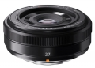

器材库 > APS画幅镜头 > XF 27/2.8

详细规格
镜头类型
广角镜头
发布日期
2013-06-25
厂家推荐价格
45,000.00 （日元）
焦距
27mm
等效35mm画幅焦距
41mm
最大光圈
f/2.8
最小光圈
f/16
视角（对角）
55.5
镜头结构
7片/5组
非球面镜片
1片
光圈叶片
7片
最近对焦距离
60cm, 微距34cm
最大放大倍率
0.1倍
滤镜口径
39mm
镜头卡口
Fujifilm XF
防抖
否
颜色
银色, 黑色
尺寸
61.2 x 23mm
重量
78g
光年2015-04-15 18:034.58 分
操作性 4.50耐用性 4.50性价比 4.50解像力 5.00色彩还原 5.00机械结构 4.00
223sywj2014-05-25 22:204.58 分
操作性 4.50耐用性 4.50性价比 4.50解像力 5.00色彩还原 4.50机械结构 4.50